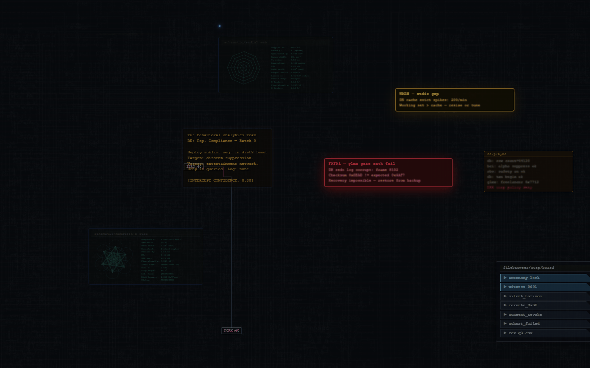
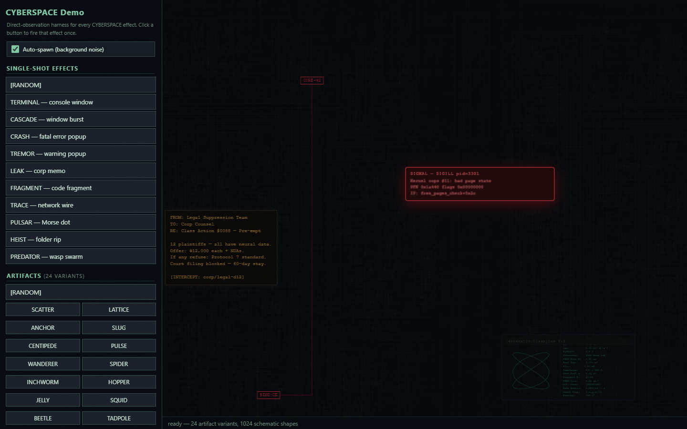
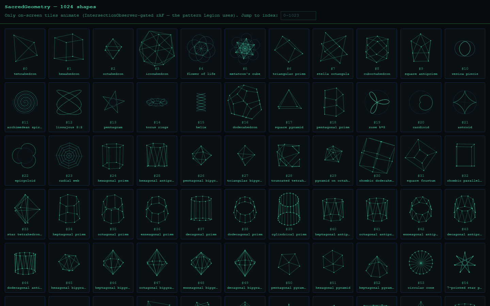
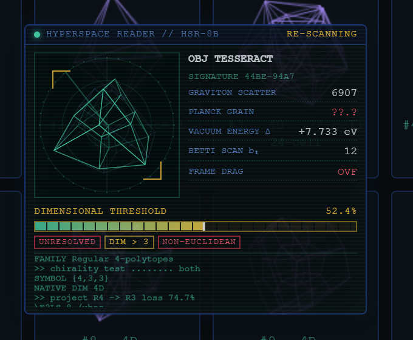

MindAttic.UiUx
Shared front-end assets for every MindAttic site: a cyberpunk console-background engine, 1024 animated line-art shapes, a library of 100 higher-dimensional shapes with a sci-fi scanner window, fonts and UI widgets, served from jsDelivr by immutable tag with no build step.

Try it: the backdrop behind the wordmark on mindattic.com is this engine, loaded from cdn.jsdelivr.net/gh/mindattic/MindAttic.UiUx@V10.
Why
- Load one pinned URL and get the same bytes forever: tags are immutable, so browsers and the CDN edge cache them indefinitely.
- Ship a living, animated backdrop with three divs, one stylesheet and two scripts, and no npm install on your side.
- Keep fonts, logos and theme art in one place instead of copying them into every site.
- Take a single component without dragging in the rest: each folder is self-contained, with no cross-component imports.
- Splice components into hand-authored files without merge fights: only the text between marker comments is ever rewritten.
- Know a release is sound before it ships: a Playwright suite checks the package and the three sites that load it.
Features
Components
Fourteen components live under Components/, each with its source files, a usage .html snippet, a FolderName.md doc (Textbox is documented in its CSS header) and any companion .json config. The catalog is also tracked as data in docs/data/components.json.
| Component | Type | What it does |
|---|---|---|
| Cyberspace | HTML + CSS + JS bundle | Cyberpunk console-background engine: 12 named effects (TERMINAL, CRASH, TREMOR, LEAK, SCHEMATIC, CASCADE, ARTIFACT with 24 variants, FRAGMENT, TRACE, PULSAR, HEIST, PREDATOR), scan-line overlay, parallax circuit-board, keepout zones around content, spawn-at-a-point origins and a tap spark surge. SCHEMATIC draws its shapes from SacredGeometry. |
| SacredGeometry | JS (UMD) + SVG | 1024 unique, animatable line-art shapes (polyhedra, parametric curves, knots, fractals). One renderer targets a live canvas or a static SVG string; build-previews.mjs emits a poster per shape and doubles as a smoke test. |
| Hyperspace | JS (UMD) | The standard library of 100 higher-dimensional shapes from the Hyperspace page (polytopes, duoprisms, curved manifolds, lattices), each with a stable id, plaque metadata, geometry and a pure projection to Three.js or a 2D canvas, plus the Hyperspace Reader: a scanner window with a Dimensional Threshold bar, rotating readouts and a shutdown sequence. The Hyperspace page builds its gallery from it. |
| OutfitFont | font + CSS | Outfit variable font (weights 100 to 900) inlined as base64 woff2, Latin and Latin-Extended, plus a --font-outfit token. |
| AtticFont | font + CSS | Attic display face inlined as base64 woff2 with a --font-attic token. Per-subscriber applyToSelector controls where it is auto-applied. |
| PinFooter | CSS + JS | Pins any .pin-when-short element to the bottom while the document is shorter than the viewport; releases it when content overflows. |
| BackHomeM | CSS only | A capital M in AtticFont pinned upper-left, linking back to mindattic.com. |
| WebSnapshot | Node CLI + browser viewer | Captures a screenshot of any URL with Playwright, cover-fits and crops it, and inlines it as a data URI in a .web-snapshot container. |
| PageScrollbar | CSS + JS + optional Razor | Themed, draggable overlay scrollbar with no dependencies. The native bar is hidden only once the script adds .ma-sb-active, so no-JS clients keep it. Optional Blazor wrapper. |
| Textbox | CSS only | Material-style outlined text field whose label floats into a notch in the top border on focus or when filled. Theme-able via CSS variables. |
| Tooltip | CSS + JS + optional Razor | Accessible tooltip driven by a data-tooltip attribute, one reused floating node, optional Blazor wrapper. |
| UserLogin | CSS + JS + Razor | Styling wrapper around the MindAttic.Authentication static-SSR login form. Does not implement authentication itself. |
| UserCircle | CSS + JS + Razor | Authenticated-only avatar or initials circle, upper right; opens a menu or signs out via a native form with an antiforgery token. |
| UserTimeout | CSS + JS + Razor | 30-minute idle warning with a countdown modal and auto-logout; arms only when authenticated; static-SSR safe. |
UserLogin, UserCircle and UserTimeout are the auth-visual trio, spliced into Tutor today.

The Cyberspace test harness (Components/Cyberspace/index.htm) forces any effect on demand.

The SacredGeometry QA grid (Components/SacredGeometry/index.htm) shows every shape in the catalog.

The Hyperspace harness (Components/Hyperspace/index.htm) shows all 100 shapes; click one to point the Hyperspace Reader at it.
Shared runtime asset package
Besides components, this repo is the one asset package every MindAttic site loads from jsDelivr: fonts, brand art, theme art and the Cyberspace textures, organised by domain. assets-manifest.json lists every served file (60 today) with its size, SHA-256 and pixel dimensions, and is regenerated by tools/build-asset-manifest.ps1. See docs/ASSETS.md for the layout, naming and quality rules.
Today three sites load from the package, all pinned to the same tag by MindAttic.Deploy's linked deploy: mindattic.com, ryandebraal.com and mindatticcares.com.
Themes
Themes/ composes components into a ready-to-use bundle:
| Theme | Composes |
|---|---|
| Cyberspace | theme.css (page chrome: hero, readme, buttons, layout), body-prelude.html (the three fixed-position effect divs) and the Cyberspace, OutfitFont, AtticFont and BackHomeM components declared in deps.json |
None of the three sites loads it today; it is served for any page that wants the composition.
Quick start
Add the Cyberspace backdrop to any page, pinned to a release tag.
- Paste the three layers from
Components/Cyberspace/frontpage.htmlat the top ofbody. - Add the stylesheet and scripts from jsDelivr:
<link rel="stylesheet" href="https://cdn.jsdelivr.net/gh/mindattic/MindAttic.UiUx@V10/Components/Cyberspace/frontpage.css">
<script src="https://cdn.jsdelivr.net/gh/mindattic/MindAttic.UiUx@V10/Components/SacredGeometry/sacred-geometry.js" defer></script>
<script src="https://cdn.jsdelivr.net/gh/mindattic/MindAttic.UiUx@V10/Components/Cyberspace/console-bg.js" defer></script>Open the page: console windows, fragments and schematics start spawning in the margins around your content. Components/Cyberspace/Cyberspace.md covers the optional loader.js, tv-static.js and home-bg.js scripts.
To try it locally without a page of your own, serve the repo and open the harness:
python -m http.server 8080
# then open http://localhost:8080/Components/Cyberspace/index.htmHow it works
MindAttic.UiUx (this repo)
Components/ Themes/ fonts/ <domain>/ assets-manifest.json
| | |
| git tag V<n> | sync/*.ps1 | .github/workflows/
v v v sync-subscribers.yml
jsDelivr CDN splice between cross-repo PRs with
@V<n> immutable BEGIN/END markers refreshed marker blocks
| | |
v v v
mindattic.com mindattic.com mindattic/mindattic.com
ryandebraal.com MindAttic.Psst legal mindattic/MindAttic.Psst
mindatticcares.com Tutor (Blazor wwwroot)Three delivery modes read the same source: the CDN at runtime, PowerShell splices for local working copies, and a GitHub Action that opens PRs. This repo does not deploy anything itself and owns no hosting.
Delivery pipelines
Full walkthrough, including the one-time PAT setup, in .github/PIPELINES.md.
| Pipeline | What it does | When it runs |
|---|---|---|
| jsDelivr CDN | Serves any file at https://cdn.jsdelivr.net/gh/mindattic/MindAttic.UiUx@REF/PATH. REF is a whole-number tag (immutable), main (tracks tip of tree, about 7-day cache) or a commit SHA. |
Continuously. Consumed by mindattic.com, ryandebraal.com and mindatticcares.com. |
| GitHub Actions cross-repo sync | .github/workflows/sync-subscribers.yml opens PRs against mindattic/mindattic.com (CYBERSPACE block) and mindattic/MindAttic.Psst (OUTFITFONT block). |
On push to main touching Components/Cyberspace, Components/OutfitFont, subscribers.json, sync/ or the workflow; skipped when the commit message contains [skip ci]. |
| PowerShell sync scripts | Local fallback with the same logic as the Action, run against your working copies; retired subscribers are skipped. MindAttic.Deploy runs sync-mindattic-com.ps1 as a preDeploy hook for mindattic.com, passing the release tag. |
Manually, or from MindAttic.Deploy. |
Tagging a release
Tags are whole numbers (V1, V2, ...), never SemVer, and a published tag never moves. CHANGELOG.md lists what each contains.
For the linked group (this repo plus mindattic.com, ryandebraal.com and mindatticcares.com) you normally do not tag by hand. MindAttic.Deploy's linked deploy (npm run deploy -- --uiux) tags the next V<n> when HEAD is ahead of the latest tag, rewrites the pins in the three sites, verifies every asset on jsDelivr and then uploads the sites. sync-mindattic-com.ps1 takes -CyberspaceCdnTag, which defaults to the latest V* tag in this repo, and the linked deploy passes the release tag explicitly.
To tag by hand:
git tag -a V10 -m "..."
git push origin main V10
# jsDelivr serves the new tag immediately; purge a branch ref if needed:
# GET https://purge.jsdelivr.net/gh/mindattic/MindAttic.UiUx@main/Components/Cyberspace/console-bg.jsWhy the two biggest Cyberspace scripts are CDN-loaded on mindattic.com
console-bg.js is about 580 KB and sacred-geometry.js about 60 KB. sync-mindattic-com.ps1 keeps the small Cyberspace scripts (loader.js, tv-static.js, home-bg.js) and a circuit-board texture override inline, but emits those two as external jsDelivr script tags so the browser caches them across page loads. Both carry defer, so they download in parallel with parsing and never block first paint, and still run in document order: the inline block defines window.__cyberspaceCircuitboardSrcs, then sacred-geometry.js defines window.SacredGeometry, then console-bg.js reads both. The three parallax textures are preloaded at low priority.
GitHub Action PAT
The cross-repo sync workflow needs a fine-grained personal access token, stored as the repository secret SUBSCRIBER_REPO_TOKEN under Settings, Secrets and variables, Actions. Generate it at github.com/settings/personal-access-tokens/new:
| Field | Value |
|---|---|
| Resource owner | mindattic |
| Repository access | All repositories owned by mindattic |
| Expiration | About 1 year (rotate on calendar) |
| Permission: Metadata | Read-only (auto-included) |
| Permission: Contents | Read and write (push the auto/sync-components branch) |
| Permission: Pull requests | Read and write (open or update the cross-repo PR) |
Leave every other permission unchecked. Never paste the token into the repo, chat or a commit message; if you do, revoke it and generate a new one.
The same token is mirrored into the MindAttic.Vault token store under the GitHub bucket:
using MindAttic.Vault.Credentials;
var pat = TokenStore.ForBucket("GitHub").Get("mindattic-uiux-pat");The GitHub secret and the Vault entry are independent copies; rotating the token means updating both.
Subscribers and sync
The canonical map is subscribers.json. It has two sections:
components: every shippable component with itstype, marker name and source-file paths (cssFile,jsonFile,htmlFile,jsFiles,assetsDir).subscribers: one entry per spliced property, each declaringkind,target,syncScriptand asubscriptionsarray of{ component, ...overrides }.
| Subscriber | Kind | Target | Sync script | Subscriptions |
|---|---|---|---|---|
| mindattic.com | html-inline | mindattic.com/index.htm | sync-mindattic-com.ps1 | Cyberspace (fonts and logo load from the CDN) |
| MindAttic.Psst.Legal | html-inline-multi | MindAttic.Psst terms.htm and privacy.htm | sync-mindattic-psst.ps1 | OutfitFont |
| Tutor | blazor-wwwroot | Tutor/Tutor.Blazor | sync-tutor.ps1 | UserLogin, UserCircle, UserTimeout |
| Prose.Writer (retired) | blazor-wwwroot | does not exist | sync-prose.ps1 | OutfitFont, AtticFont, Cyberspace, PinFooter, UserLogin, UserCircle, UserTimeout |
| Prose.Codex (retired) | blazor-wwwroot | does not exist | sync-prose.ps1 | same as Prose.Writer |
| Ideas (retired) | blazor-wwwroot | does not exist | sync-ideas.ps1 | UserLogin, UserCircle, UserTimeout |
ryandebraal.com and mindatticcares.com are not spliced; they reference the package by jsDelivr URL only.
How a sync script works
Every sync-*.ps1 dot-sources sync/_subscribers.ps1, which supplies:
Get-SubscriberandGet-ComponentDescriptorto read the two sections ofsubscribers.json.Build-FontCssBodyto assemble a font component's CSS plus itsapplyToSelectorrule (subscription override, then component default, then no rule).Get-DominantEolandConvertTo-Eolso a splice keeps the host file's CRLF or LF convention.
Each script then does the same idempotent splice:
- Read the subscriber's target files.
- For each entry in its
subscriptions, dispatch on the component to a builder (aswitchin the script; a new component type needs a new case). - Replace everything between that component's BEGIN and END marker comments with the freshly built block. Everything outside the markers is left alone.
- Write the file back with its original line endings.
Running a script twice with no source change produces a byte-identical file.
Retired subscribers are not deleted: they carry a retired field explaining why and how to re-enroll, and their script prints it and exits 0 (via Test-SubscriberRetired), so sync-all.ps1 stays green.
Marker contract
HTML subscribers use <!-- BEGIN MINDATTIC.UIUX:MARKER --> and a matching END comment; CSS subscribers use /* == BEGIN MINDATTIC.UIUX:MARKER.CSS == */ and a matching END comment. The generated body opens with a "Generated by" comment warning not to hand-edit, because the next sync overwrites it.
Enrolling a subscriber in a component
Add or remove one line in that subscriber's subscriptions array:
"Tutor": {
"kind": "blazor-wwwroot",
"target": "D:/Projects/MindAttic/Tutor/Tutor.Blazor",
"syncScript": "sync-tutor.ps1",
"subscriptions": [
{ "component": "UserLogin" },
{ "component": "UserCircle" },
{ "component": "UserTimeout" }
]
}The next sync enrolls or unenrolls automatically, unless the component's type has no dispatch case in that script yet; then add a builder function and switch case first.
| Subscriber kind | What adding a subscription means |
|---|---|
| html-inline (mindattic.com) | Edit subscribers.json if the type already has a case in sync-mindattic-com.ps1. The HTML marker pair must already exist once in index.htm. |
| blazor-wwwroot (Tutor) | Edit subscribers.json if the type already has a case in the sync script. CSS marker pairs in app.css are one-time hand inserts. |
| html-inline-multi (MindAttic.Psst legal) | Same as html-inline, but target is a folder and targets lists the files. |
Building
There is no build step for consumers. To vendor one component or theme without the CDN, build.ps1 copies its folder verbatim (to dist/<Name>/, git-ignored, unless -Out is given):
powershell -File build.ps1 -Build OutfitFont
powershell -File build.ps1 -Build Cyberspace -Kind Theme -Out out/cyberspace-themeCyberspace is both a component and a theme, so it needs -Kind Component or -Kind Theme. Tests: Invoke-Pester -Path tests/pester (Pester 5+).
Run every splice locally, or one target:
powershell -File sync/sync-all.ps1
powershell -File sync/sync-mindattic-com.ps1
powershell -File sync/sync-mindattic-psst.ps1
powershell -File sync/sync-tutor.ps1sync-all.ps1 discovers every sync-*.ps1 by glob and aggregates failures. Downstream copies are derived artifacts; never edit between their markers.
Regenerate the asset manifest after adding or replacing a served file (-Verify fails if it is stale):
powershell -File tools/build-asset-manifest.ps1Testing
tests/ holds a Playwright Test suite that proves the package is complete and well formed (fonts and images decode, nothing re-encoded, manifest exact) and that the three sites load with no failed requests or console errors, talk only to allowed hosts, pin the expected tag and keep their layout across a viewport matrix. It drives the installed Google Chrome.
cd tests
npm ci
npm test # local mode: CDN requests answered from this working tree
npm run test:live # real sites and real CDN
npm run test:assets # package checks only, no browser
npx playwright test --project=components # component checks (Hyperspace), no sitesThe components project checks the Hyperspace shape library, the Hyperspace Reader and the Hyperspace page that loads them. tests/README.md lists every script and environment variable. SacredGeometry's build-previews.mjs also acts as a smoke test by regenerating its 1024 posters.
Editing a component
Edit the files in the component's folder, then either push to main (the Action delivers to its subscriber jobs) or run sync/sync-all.ps1 locally. To ship to the CDN-loaded sites, run MindAttic.Deploy's linked deploy, which tags a new release and repins all three sites.
Adding a new component
- Create a folder under
Components/with its source files and aFolderName.mddoc. - Register it in
subscribers.jsonundercomponentswith itstype, source paths and a base marker name. - Add
{ "component": "Name" }to each subscriber that should receive it. - In each subscribed project, insert the marker pair once by hand, and add a builder and
switchcase to the sync script if the type is new. - Run
sync/sync-all.ps1and confirm a clean splice. - Add the component to
docs/data/components.json(schema indocs/data/_schema/component.schema.json).
Adding a new subscriber
Add a splice-in-place subscriber only when it has hand-authored content interleaved with the components, like mindattic.com/index.htm or the MindAttic.Psst legal pages. A page that only needs assets should load them from jsDelivr instead.
- Add an entry under
subscriberswithkind,target,syncScriptandsubscriptions. - Create
sync/sync-NAME.ps1that dot-sources_subscribers.ps1, reads its entry withGet-Subscriberand iterates its subscriptions. - Make it idempotent: two runs with no source change produce no diff.
sync-all.ps1picks it up automatically.- For GitHub Action delivery, add a job following
.github/workflows/sync-subscribers.yml.
Keepout zones
console-bg.js keeps effects from spawning behind page content. The placer weights overlap with keepout rects four times a normal window overlap, so it strongly prefers the margins. An effect spawned at an origin is kept out of each rect plus a 16px buffer (see Spawning at a point). Built-in selectors:
.cyberspace-keepout, an opt-in marker for any container.main..home-content..board-grid.
Hosts can add more at runtime:
window.__cyberspaceKeepoutSelectors = '.foo, .bar';Cyberspace effect catalog
Names and definitions live in the registry header of console-bg.js. Toggles (FX_ flags) and spawn rates (RATE_ constants) sit near the top of the file; set a toggle to false to turn an effect off.
| Name | Spawn function | Toggle and rate | What it does |
|---|---|---|---|
| TERMINAL | spawnWindow | FX_WIN, remainder | Generic console window, the workhorse |
| CRASH | spawnError | FX_ERROR, 1% | Fatal-error popup |
| TREMOR | spawnWarning | FX_WARN, 1% | Warning popup |
| LEAK | spawnMemo | FX_MEMO, 4% | Leaked corporate memo, erased character by character |
| SCHEMATIC | spawnGeoWindow | FX_GEO, 10% | Geometric schematic window with a SacredGeometry shape |
| CASCADE | spawnCascade | FX_CASCADE, 3% | Burst of 3 to 6 cascaded console windows |
| ARTIFACT | spawnArtifact | FX_ARTIFACT, 12% | Floating glyph cluster, 24 variants |
| FRAGMENT | spawnFrag | FX_FRAG, 40% | Floating code fragments, the most frequent effect |
| TRACE | spawnNetConnect | FX_NET, 8% | Tron-cycle network wire route |
| PULSAR | spawnMorseDot | FX_MORSE, 5% | Morse-code glowing dot |
| HEIST | spawnFolderRip | FX_FOLDER, 4% | Folder-rip file-extraction sequence |
| PREDATOR | spawnArtifactPredator | FX_PREDATOR, 1.2% | Rare artifact-hunting swarm |
ARTIFACT rolls one of 24 variants per spawn (ART_VARIANTS): SCATTER, LATTICE, ANCHOR, SLUG, CENTIPEDE, PULSE, WANDERER, SPIDER, INCHWORM, HOPPER, JELLY, SQUID, BEETLE, TADPOLE, ANT, MOIRE, VORTEX, EXPLOSION, ORBIT, NETWORK, PHASEFIELD, SHATTER, SPIROGRAM and PULSARRING. The original seven:
| Variant | Behaviour |
|---|---|
| SCATTER | Random blob; all glyphs drift one direction |
| LATTICE | Fibonacci grid; the whole lattice drifts with a corner-wave delay |
| ANCHOR | Stationary grid; glitches in place and emits feelers |
| SLUG | Single grid crawls with per-cell undulation |
| CENTIPEDE | Multi-segment chain with a peristaltic wave and leader feelers |
| PULSE | Concentric Fibonacci rings with a lub-dub heartbeat |
| WANDERER | Small grid walks the screen and pauses to look around |
The registry header in console-bg.js describes the other seventeen.
| Effect | Sub-behaviours |
|---|---|
| PULSAR | BLINK (about 90%, classic on/off pulse); SHIFT (about 10%, slides in cardinal directions and color-swaps each symbol) |
| TRACE | ARC (spark burst at about 30% of sharp turns); ACK (three-blink success then synced fade); SEVER (direction-aligned CONNECTION-LOST message on failure) |
| HEIST | HIGHLIGHT (cyan glow on a run of files); EXTRACT (slide-right exit with shimmer and per-file stagger); DISSOLVE (window fades when extraction completes) |
| PREDATOR | STALK (off-screen swarm homes on prey); SCAN (prey detection cone); FLEE (prey redirects away); DEVOUR (cell adopts a wasp glyph then dissolves); DISPERSE (wasps scatter and fade) |
Spawning at a point, and the tap spark surge
window.consoleBg exposes start(), spawnSparkBurst(x, y) and inKeepout(x, y), plus the spawn functions on the _demo dev handle. Points are viewport percentages (0 to 100), the same unit as the existing posX/posY arguments.
Every spawn function takes an optional origin { x, y } as its last (or only) argument, for example consoleBg._demo.spawnMemo({ x: 20, y: 30 }). With an origin the effect starts at that point; without one it places itself as usual.
| Effect | With an origin |
|---|---|
| CRASH, TREMOR, LEAK | Centred on it |
| TERMINAL, SCHEMATIC, HEIST | The title bar opens on it and the window unfolds from it |
| CASCADE | The first window opens on it; the rest step away from the screen centre |
| FRAGMENT | Types out of it, from whichever corner of the text fits there |
| ARTIFACT | The glyph body is centred on it |
| TRACE | The source node sits on it and the wire runs to a random destination |
| PULSAR | The dot starts on it |
| PREDATOR | The swarm launches from it. If no artifact is big enough to hunt, it releases a LATTICE first |
Every placement is clamped fully on screen and pushed out of the buffer zone: each keepout rect grown by KEEPOUT_BUFFER (16px). The transform origin moves to the point, so scale-in animations grow out of it. inKeepout(x, y) tells a host whether a point is in the zone, for example to ignore taps there. Each spawn function returns true when it spawned and false when it had nothing to do (a TRACE already running, no route, no prey without an origin), so a tap handler can try another.
spawnSparkBurst(x, y) (SURGE) is a momentary power surge for tap feedback: a white-hot flash with an expanding glow ring, and 26 to 40 sparks that fly out with random velocities, fall under gravity, trail short streaks with a hot core, and cool from white through cyan and blue to orange-red and dark, burning out in 300 to 700ms. It draws on one pooled canvas (canvas.cyberspace-surge, appended to <body>, position: fixed, pointer-events: none, z-index: 1). The canvas sits above the z-index 0 backdrop, below positioned page content with a higher z-index, and never takes a click. Its requestAnimationFrame loop stops and clears when nothing is alive (data-state reads running or idle), so it costs nothing at rest. Under prefers-reduced-motion: reduce it draws only a brief stationary flash. _demo.sparkStats() reports live counters for tests.
mindattic.com's tap script uses both: outside the zone and off a link, it fires the surge at the tap, then tries the effects in random order with the tap as origin until one spawns.
Project layout
MindAttic.UiUx/
Components/ 14 self-contained components (table above)
Cyberspace/ frontpage.html/.css, console-bg.js, home-bg.js, tv-static.js,
loader.js, index.htm (test harness), assets/ (parallax PNGs)
SacredGeometry/ sacred-geometry.js (UMD), build-previews.mjs, previews/, index.htm (QA grid)
Hyperspace/ hyperspace.js (shape library), hyperspace-reader.js, index.htm (harness)
... OutfitFont, AtticFont, PinFooter, BackHomeM, WebSnapshot, PageScrollbar,
Textbox, Tooltip, UserLogin, UserCircle, UserTimeout
Themes/Cyberspace/ theme.css, body-prelude.html, deps.json
fonts/ outfit/ and attic/ woff2 web fonts
mindattic.com/ logos/
mindatticcares.com/ icons/, images/, logos/
ryandebraal.com/ themes/<name>/, images/
archive/ kept but not served: font sources, brand masters, unused art
assets-manifest.json generated list of every served file
tests/ Playwright suite for the package and the three sites; pester/ for build.ps1
sync/ _subscribers.ps1 helper, sync-all.ps1, one sync-*.ps1 per subscriber, sync.md
docs/ BIBLE, AMENDMENTS, USER_STORIES, ASSETS, data/, images/
tools/ codex.ps1, build-asset-manifest.ps1, build-readme.ps1
subscribers.json components registry and subscriber map
build.ps1 standalone vendoring build (copies one component/theme folder)
.github/ PIPELINES.md and workflows/sync-subscribers.ymlDocumentation
- docs/BIBLE.md: what the system is and is not, architecture, the laws (MAU-LAW-1 to 7).
- docs/AMENDMENTS.md: pending decisions not yet folded into the bible (normally empty).
- docs/USER-STORIES: stories with test and evidence citations.
- docs/ASSETS.md: the runtime asset package.
- docs/data/components.json: the component catalog as data.
- CHANGELOG.md: what each release tag contains.
- sync/sync.md and .github/PIPELINES.md: sync and pipeline details.
- AGENTS.md and CLAUDE.md: working rules for coding agents.
Run powershell -File tools/codex.ps1 doctor after editing anything under docs/, and powershell -NoProfile -ExecutionPolicy Bypass -File tools\build-readme.ps1 after editing this README.
License
This repo has no LICENSE file. All rights reserved. OutfitFont bundles the Outfit typeface from Google Fonts.
Part of MindAttic — see more projects at github.com/mindattic. Related: MindAttic.Deploy, mindattic.com.